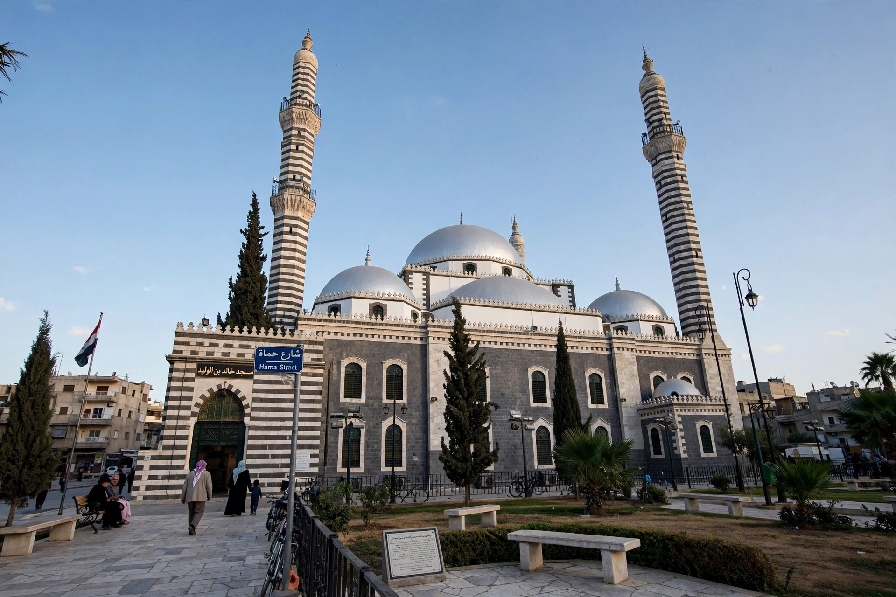

| Khalid ibn al-Walid (c. 585–642) | |
|---|---|
| Nickname | Sayf Allah — Sword of God |
| Tribe | Banu Makhzum, Quraysh |
| Buried | Homs, Syria |

Khalid ibn al-Walid ibn al-Mughira al-Makhzumi (c. 585–642) was an Arab military commander of the Quraysh tribe who played a central role in the Ridda Wars and the early Muslim conquests of Syria and Iraq. Muhammad gave him the title Sayf Allah, 'the Sword of God'; tradition credits him with never losing a battle.
A skilled horseman of the Banu Makhzum, Khalid initially opposed Muhammad, contributing to the Muslim defeat at Uhud (625). He converted in 629 and fought at Mu'tah, where he salvaged the Muslim army, and at the conquest of Mecca and Hunayn.
Under Caliph Abu Bakr, Khalid suppressed rebellious Arabian tribes in the Ridda Wars (632–633), then invaded Sasanian Iraq, winning at Ullais and capturing al-Hira.
After a famous march across the Syrian desert, Khalid defeated Byzantine armies at Ajnadayn, Fahl and Damascus, and decisively at the Battle of Yarmouk (636) against Emperor Heraclius's forces, leading to Muslim rule in Syria. Caliph Umar dismissed him from command in 638. He died in Homs in 642, where his mosque and tomb stand.